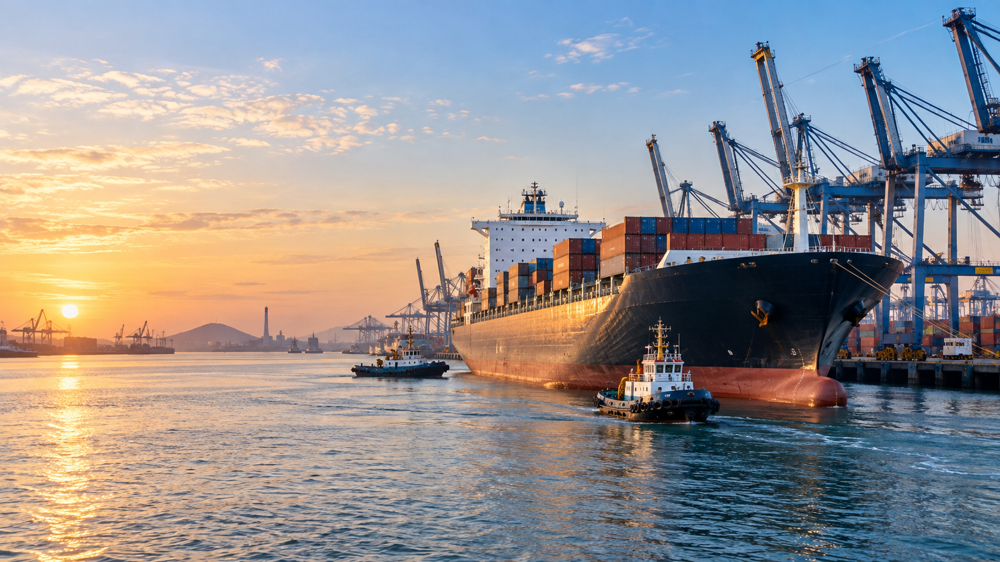
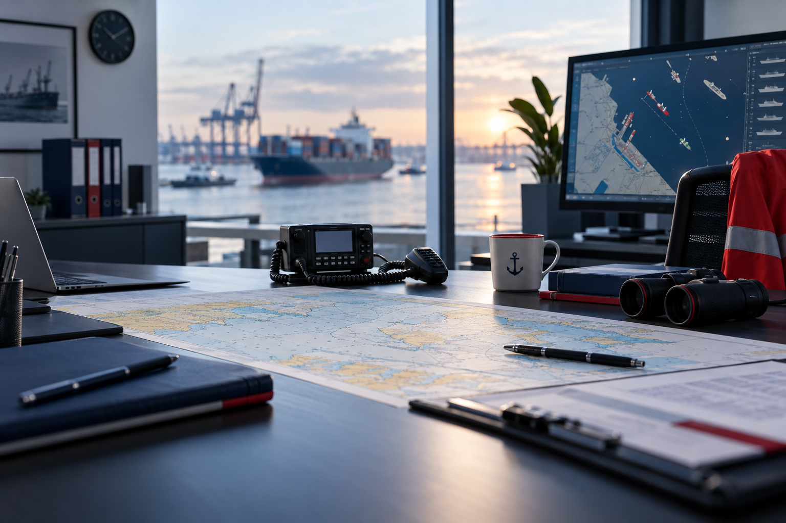

Ship Agency
Port agency attendance, authority liaison, inward and outward clearance, crew movement, documentation, and on-ground coordination for vessel calls.

Marine services and engineering
R V Maritime Private Limited supports commercial shipping requirements with practical, round-the-clock coordination for port calls, ship recycling, spares, chandling, cargo operations, engineering assistance, and vessel support services across India.
Company Profile
R V Maritime Private Limited is positioned as a multi-service maritime partner for vessel owners, technical managers, charterers, cash buyers, ship recyclers, suppliers, and offshore operators. The company brings together marine services, engineering assistance, agency attendance, operational follow-up, local coordination, and supply support through one accountable point of contact.
The service model is designed for real vessel timelines: clear pre-arrival planning, local follow-up, urgent procurement, documentation support, and practical updates until the job is closed.

Core Services
From arrival planning and port formalities to recycling support and urgent supplies, R V Maritime Private Limited helps keep vessel operations moving with clear communication and practical execution.
Port agency attendance, authority liaison, inward and outward clearance, crew movement, documentation, and on-ground coordination for vessel calls.
Assistance for vessels arriving for recycling, including Alang delivery coordination, beaching support, local formalities, and recycler liaison.
Supply of new, reusable, reconditioned, and second-hand ship machinery spares sourced through reliable marine and recycling-yard networks.
Provisions, bonded stores, deck stores, engine stores, cabin stores, safety items, and urgent vessel requirements arranged through a responsive supply desk.
Cargo handling, tank cleaning coordination, slop and sludge disposal support, and operation planning aligned with port and environmental requirements.
Commercial support for end-of-life vessels and maritime assets, including inspection coordination, buyer-seller liaison, and recycling market follow-up.
Alang and Recycling Desk
Suitable for owners, cash buyers, masters, managers, and recyclers who need local coordination before and during arrival.
R V Maritime Private Limited can present a dedicated recycling support desk for vessels nominated to Indian recycling yards. The service can cover pre-arrival planning, ETA coordination, local authority interface, crew disembarkation support, and beaching-day guidance.
Network
The website can present R V Maritime Private Limited as a single-window coordination partner for key Indian ports and recycling locations, with partner and sub-agent coverage where required.
Why R V Maritime
Operational follow-up for urgent port, vessel, and supply requirements.
Practical familiarity with Indian port procedures and recycling-yard workflows.
Agency, supplies, recycling support, spares, and logistics handled through one desk.
Support for formalities, clearances, reporting, and stakeholder communication.
Contact
Share the vessel name, port, ETA, scope of work, and urgency. R V Maritime Private Limited can respond with the next steps, required documents, and a service plan.